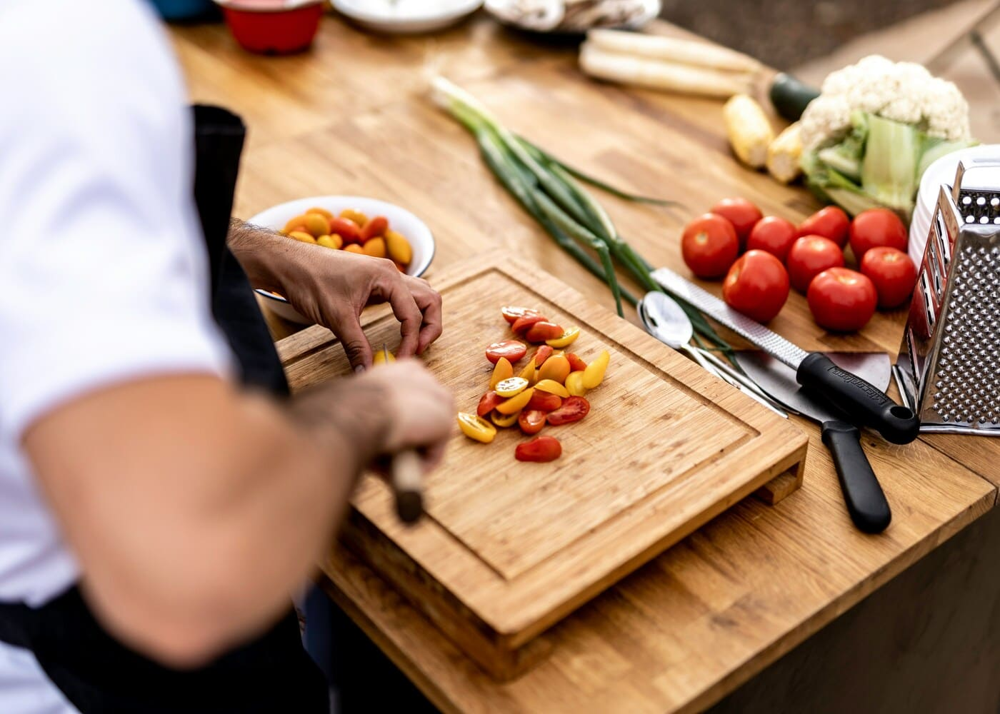
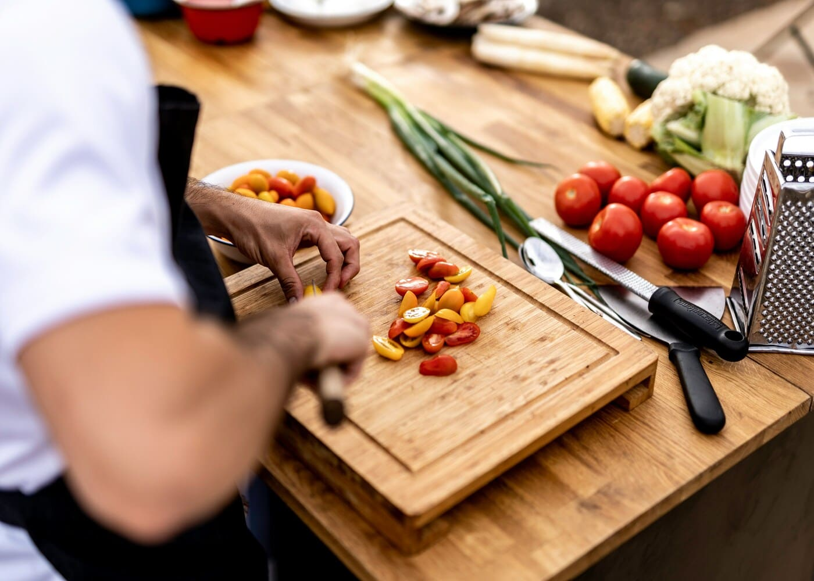

Vivez la cuisine, partagez la table
Dans une maison de campagne réchauffée par le feu et entourée d'un potager et d'arbres fruitiers, le chef vous invite à apprendre, participer et déguster. Les produits du jardin parfument chaque plat.
- Mercredi & vacances scolaires : cours enfants
- Samedi & dimanche matin : ateliers adultes
- Mercredi, Jeudi, Vendredi, Samedi, Dimanche soir

 

Les Petits Chefs — Cours enfants
Chaque mercredi après-midi et pendant les vacances, les enfants (6-10 ans / 11-15 ans) apprennent à cuisiner avec des produits frais du jardin. plats mijotés, astuces de chef, educations culinaires et petites recettes qui donnent confiance.
- Durée : 2h30 (préparation + dégustation)
- Matériel fourni : tablier & fiche recette
- Tarif indicatif : 35 € / enfant


Le potager visible depuis la cuisine inspire les recettes : herbes fraîches, tomates et œufs donnent du sens aux ateliers.
La Table — Ateliers pour adultes
Samedi et dimanche matin, réalisez un repas (entrée, plat) guidé par le chef. Techniques, astuces et dégustation conviviale : un cours pratique pour apprendre et vous repartez avec un repas pour deux.
- Durée : 2h30 (préparation + dégustation)
- Tarif : 55 € / personne — duo : 100 €
- Option : accord mets-vins disponible
Les ingrédients sont choisis en priorité dans notre jardin et chez des petits producteurs locaux, pour un goût authentique et de saison.
Dîner Spectacle — Le chef cuisine devant vous
Assistez à la préparation de votre repas en direct : le chef partage ses gestes, ses techniques et raconte l'histoire de ses producteurs. Posez vos questions, échangez, participez si vous le souhaitez. Puis savourez votre repas au coin du feu, sur la terrasse ou sous les oliviers.
La formule :
- De 6 à 15 personnes
- Menu complet : apéritif, entrée, plat, dessert (vins en supplément)
- 55 € par personne — Offre duo : 100 €
L'esprit d'une vraie table d'hôte, où se créent rencontres et moments authentiques.
Privatisation & événements
Privatisez la maison pour vos événements : la cuisine vivante et les produits frais du jardin donnent à chaque événement une dimension conviviale et inoubliable.
- Fêtes d'anniversaire (petits et grands)
- Enterrements de vie de célibataire
- Baptêmes, communions
- Mariages intimistes
- Repas d'entreprise et séminaires
Contactez-nous pour composer ensemble votre événement sur mesure.
Le Jardin autour de la maison
Notre potager et verger ne sont pas des ateliers : ils fournissent des produits frais pour la cuisine et embellissent les extérieurs. Tomates anciennes, fines herbes, fruits à cueillir — la saison guide les menus et les couleurs.
- Usage culinaire prioritaire
- Esthétique & ambiance pour les cours et dîners
- Choix variétal centré sur saveur et rusticité
Le potager est un décor vivant, un réservoir de saveurs et une source d'inspiration pour chaque atelier.
Contact & Réservation
Envoyez vos demandes (date, nombre de personnes, type d'activité) et nous revenons vers vous rapidement.
Pour rendre le formulaire opérationnel : utilisez Formspree, Netlify Forms ou connectez un backend.